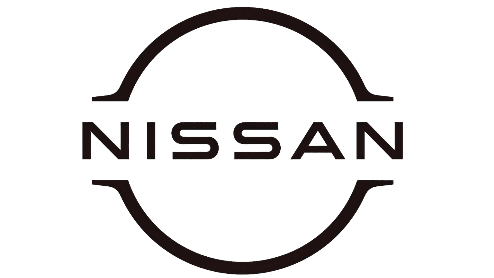

Développeur Front / Intégrateur
En tant que développeur front end spécialisé en WordPress, ma reconversion a été une réussite. J'ai acquis une solide expérience en développant des interfaces utilisateur modernes et performantes. Je suis à la recherche d'un nouveau challenge au sein d'une équipe agile pour contribuer à des projets ambitieux et innovants.
Développeur Front End (Spécialité WordPress)
Certification Développeur la partie Front-end
Certification Maîtrise de la qualité en projet Web
Sûrete SNCF (WordPress + thème Timber perso)
Nutrition & Santé (WordPress + thème Timber perso)
Les Mouettes Vertes (WordPress avec Elementor)
Credit Agricle Britline (Integration)
Nissan Now (Integration, site en React)
